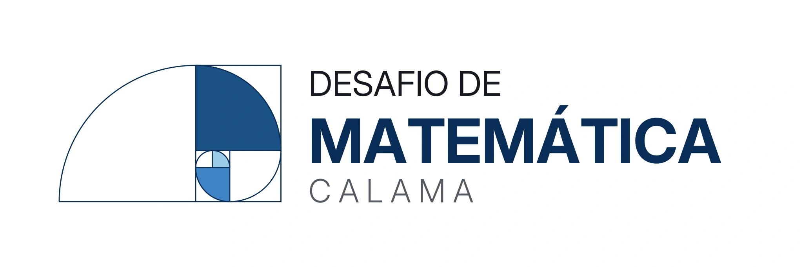
COMPETIÇÃO DO CAMPUS
Desafio de Matemática Calama: prova em 10 de novembro
Confira as orientações para a competição do campus.
Ler notíciaEM EVIDÊNCIA
Imagens, projetos e notícias da Matemática no Campus Porto Velho Calama.

Confira as orientações para a competição do campus.
Ler notícia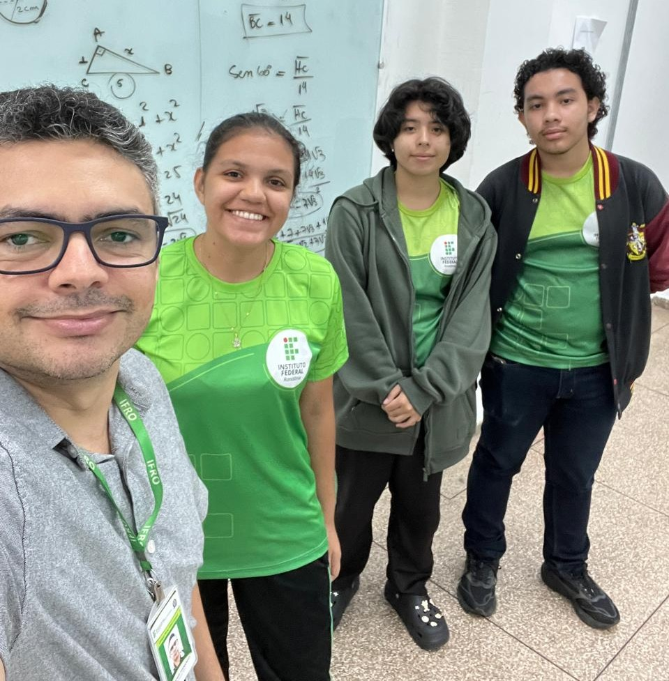
Aulas e resolução de problemas além da sala de aula.
Ler notícia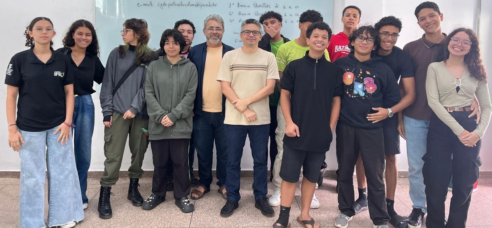
Conheça uma competição que valoriza o trabalho coletivo.
Ler notícia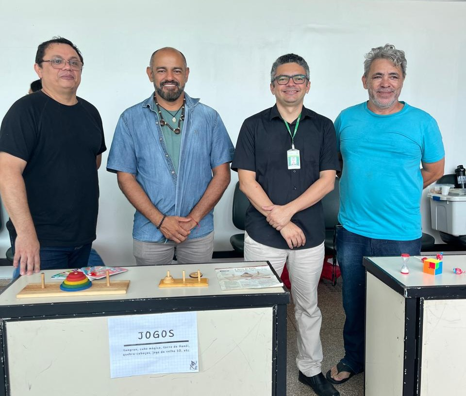
Jogos e atividades aproximam a Matemática do público.
Ler notíciaENSINO, PESQUISA E EXTENSÃO
Iniciativas que estimulam a aprendizagem, a investigação e a participação dos estudantes.
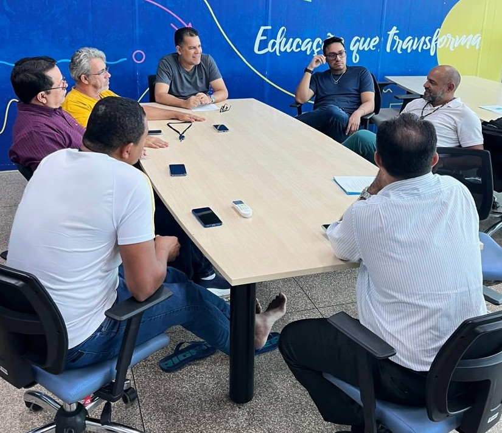
Um espaço reservado para a divulgação de estudos e projetos de pesquisa desenvolvidos no campus.
Página do projetoAulas extracurriculares, resolução de problemas e aprofundamento matemático para competições.
Conhecer o TOMIniciativa voltada à preparação e ao fortalecimento dos conhecimentos matemáticos para o Enem.
Página do projetoAtividade de divulgação e valorização da Matemática em referência ao Dia Nacional da Matemática.
Página do projetoDESAFIOS E OPORTUNIDADES
Conheça as competições acompanhadas pelo campus. Cada uma terá sua própria página de informações.
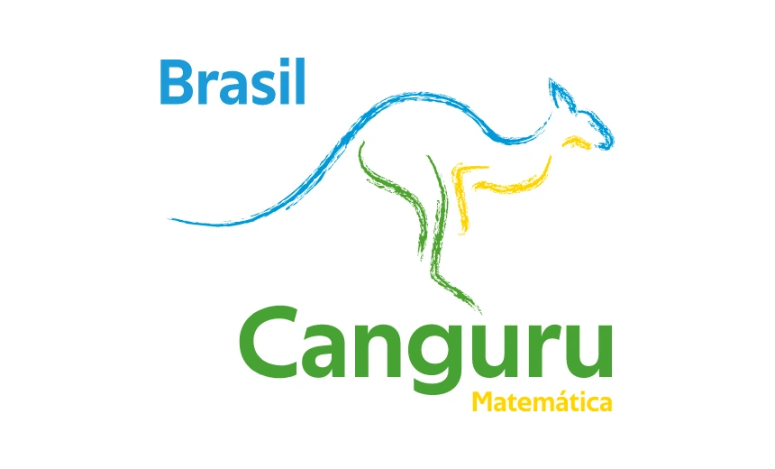
Desafios de lógica e raciocínio que incentivam uma relação criativa com a Matemática.
Conhecer competição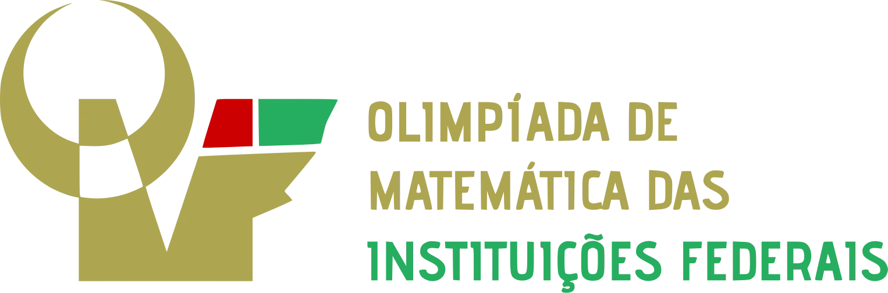
Competição que mobiliza estudantes das instituições da Rede Federal de Educação.
Conhecer competição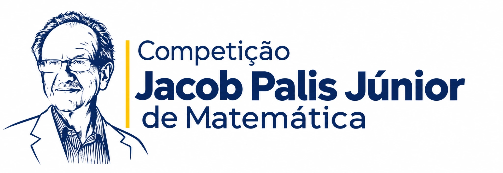
Problemas que estimulam o pensamento matemático e a resolução de desafios.
Conhecer competição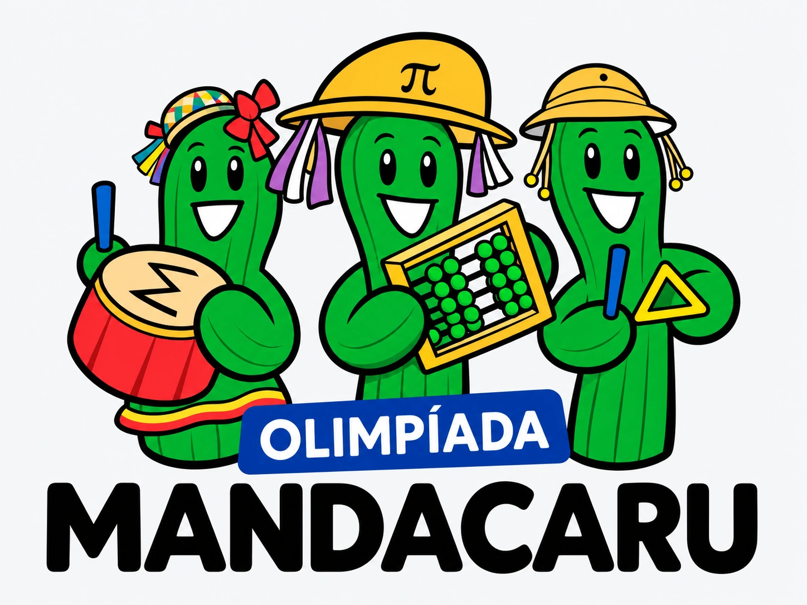
Desafios que incentivam a criatividade, o raciocínio lógico e a resolução de problemas matemáticos.
Conhecer competição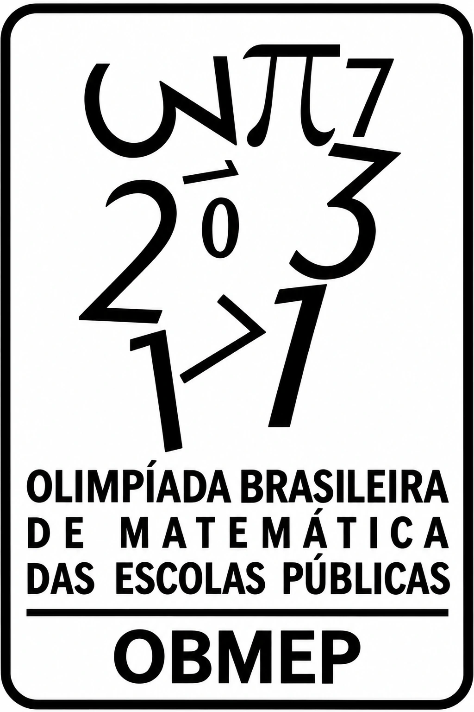
Uma das principais olimpíadas escolares de Matemática do país, com diferentes etapas.
Conhecer competição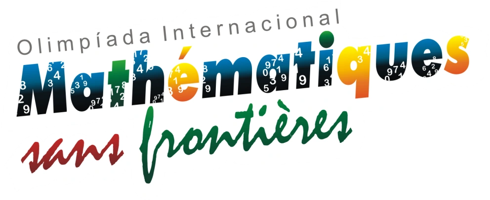
Competição realizada por equipes, com ênfase na colaboração e na solução de problemas.
Conhecer competiçãoCompetição do próprio campus para estimular o estudo e a participação em Matemática.
Conhecer competiçãoCONQUISTAS QUE INSPIRAM
Medalhas, menções honrosas e histórias de estudantes do IFRO Campus Calama. Um espaço dedicado ao reconhecimento de nossos talentos.